Sample Data
Viewing Metadata
Using the Segmentations Tool
This tutorial covers basics of using ChimeraX, both on the desktop and in virtual reality to interactively segment DICOM medical imaging data. The part of the tutorial pertaining to VR assumes you have the necessary equipment for virtual reality already installed and set up for the room. Descriptions below are for Oculus hand controllers, but other systems have hand-controller buttons that are generally similar in position and function.
See also: ChimeraX DICOM Reference, ChimeraX for Medical Image Analysis
| 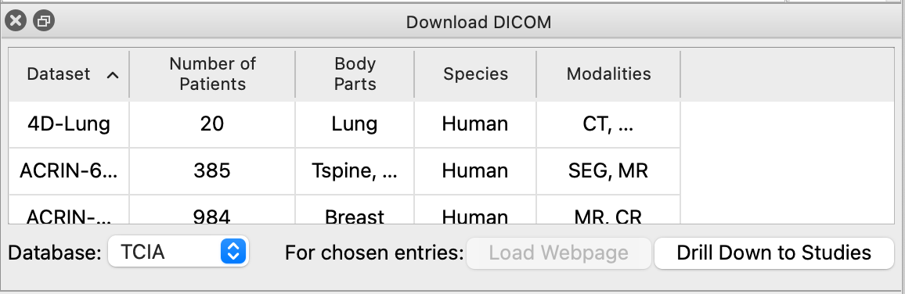 |
| 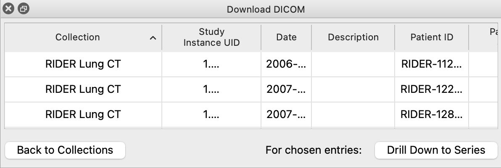 |
| 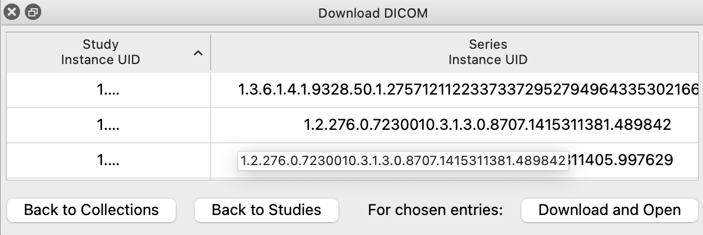 |
Start ChimeraX by clicking its icon. After the ChimeraX window appears, open any DICOM data.
You may use any local CT, PET, MRI, or X-Ray data, including the same sample data used in the DICOM in Virtual Reality tutorial. To open local data:
Menu: File → Open DICOM Folder (dialog shows Format: DICOM image), browse to location, select directory, click ChooseChimeraX also includes a tool called Download DICOM that can be used to retrieve data from the Cancer Imaging Archive. Data from the Cancer Imaging Archive have been anonymized and are freely available. To open this tool:
Menu: Tools → Medical Imaging → Download DICOM
Command: ui tool show 'Download DICOM'
A one-time disclaimer will prompt you to accept TCIA's terms of use. If you accept their terms, the tool will start gathering information about TCIA datasets for you. When it is finished downloading, the data will be cached so that the tool starts up faster next time, and the tool's dataset table will be updated to show all available datasets.
Over 120 datasets are available from TCIA, each having different modalities, but for the purposes of this tutorial the RIDER Lung CT dataset is best. If you choose another dataset and encounter problems, please file a bug report or email chimerax-users. When you click on a dataset, the 'Load Webpage' button will become active. Clicking on it will open a web browser window in ChimeraX, letting you see information about the database and its usage policy. The webpage will also tell you any limitations on the use of the data, and how to cite it should you write a paper based off of the data.
Click any dataset and then click "Drill Down to Studies". The tool will take a moment and download information about each study in the dataset. When finished, the table will update to show all studies. From here, you can either go back to the list of all datasets, or refine further to series for individual patients.
Click any study and then click "Drill Down to Series". The tool will take a moment and download information about each series in the study. When finished, the table will update to show all series. Finally, you can click an individual series and downloading by clicking the "Download and Open" button. This is a 'blocking' operation, meaning ChimeraX will freeze as the data is being downloaded and open it for you when it is finished.
Alternatively, if you know the exact series you want to download, you can also use its TCIA Series Instance UID to download it using the 'open' command:
Command: open 1.3.6.1.4.1.9328.50.1.298748100008818908989408006815250397386 fromDatabase tcia format dicom
When you've opened some data you can close the tool.
Command: ui tool hide 'Download DICOM'
| 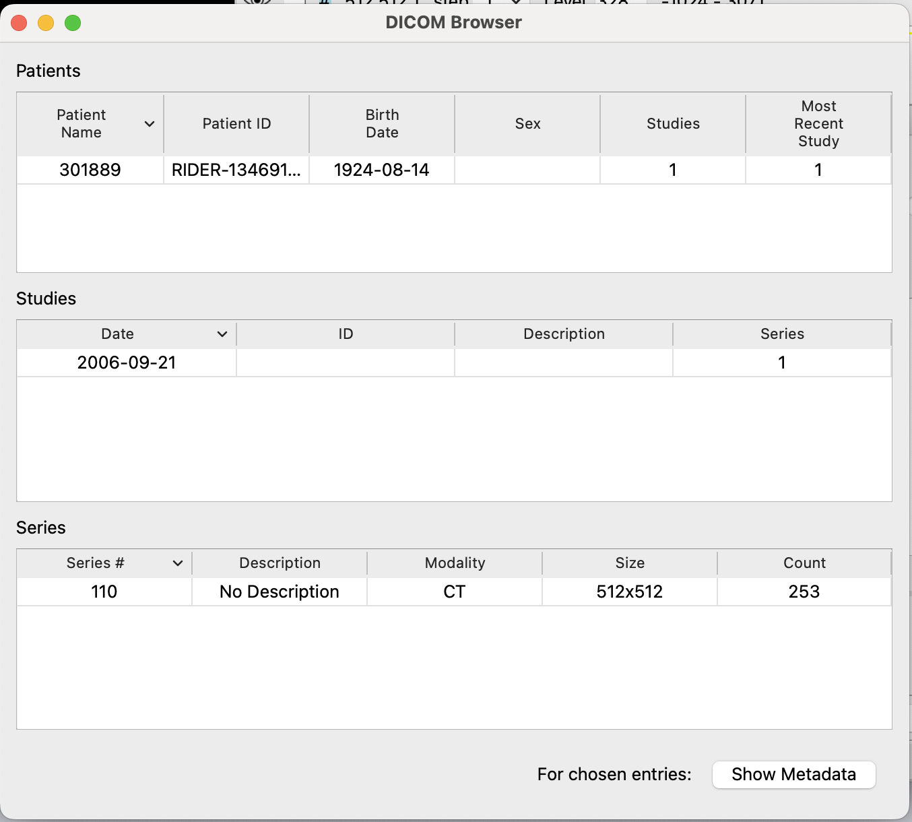 | 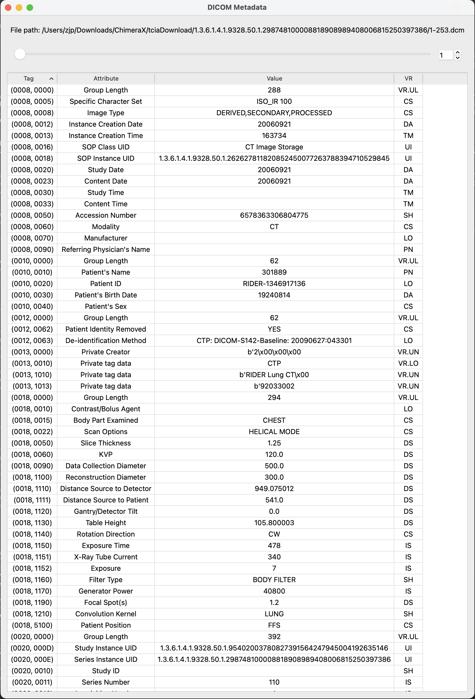 |
ChimeraX now has tools to show DICOM metadata that can be opened either from the menu, model menu 'Info' button, or a command.
Menu: Tools → Medical Imaging → DICOM Browser
Model Menu: Click on Data → Click 'Info'
Command: ui tool show 'DICOM Browser'
If the tools are accessed from the model menu, then clicking 'Info' while a Patient or Study is highlighted will bring up the DICOM browser. If a series is highlighted then the 'DICOM Metadata' tool will open to show more detailed information on a per-file basis.
When you open new DICOM data, ChimeraX attempts to find out whether the patient and study containing that data are already open. If they are, ChimeraX merges the incoming data with the open patient under the same model, puts any series that is part of an open study under that same study, and any images that are a part of an open series under the same series.
The DICOM Browser is aware of new data and these merging operations, and updates itself to show new entries automatically. Clicking on a patient will narrow the studies shown to just that patient's studies, and clicking on a study will narrow the series shown to just series in that study.
To open the 'DICOM Metadata' tool, open the DICOM browser and click a series or range of series, then click the 'Show Metadata' button on the DICOM Browser tool. A new window will open showing the value of each DICOM tag. Double clicking on a tag will open a web browser that will show you the definition of the tag in the DICOM specification. Using the tool's scroll bar, you can see the metadata for all files in the series. When you're satisfied that everything seems to be in order, you can close both tools.
Command: ui tool hide 'DICOM Metadata'
Command: ui tool hide 'DICOM Browser'
| 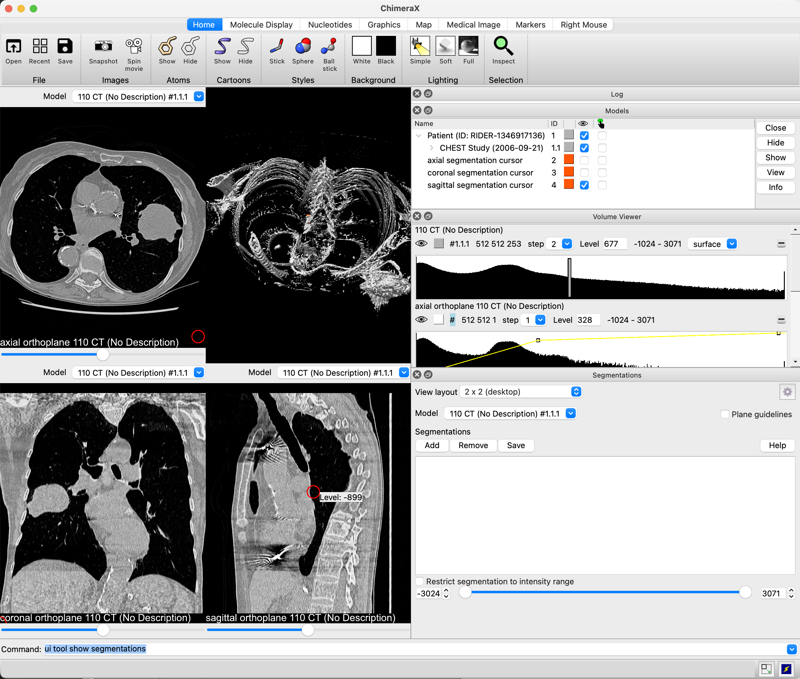 |

|
| 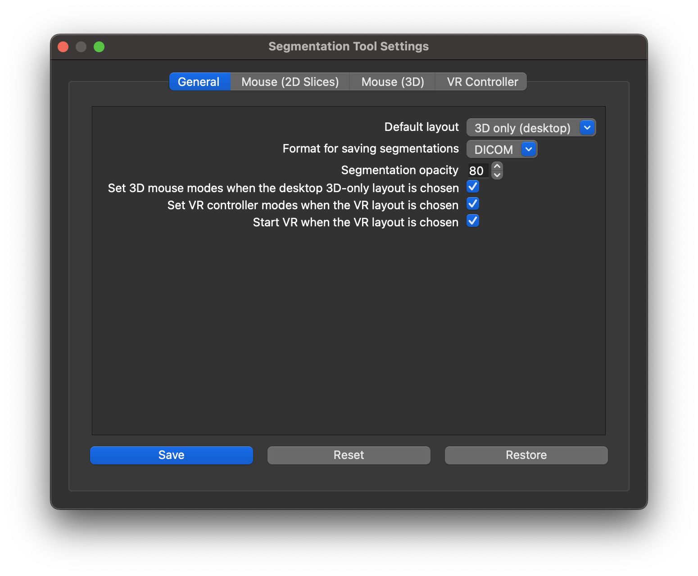 |
For a refresher on basic manipulations of medical data, you can reference previous DICOM tutorials. before proceeding. Open the Segmentations tool by using the menu or by command:
Menu: Tools → Volume Data → Segmentations
Command: ui tool show segmentations
By default, the tool will rearrange the user interface to show three two-dimensional slices, one for each of the axial, coronal, and sagittal axes, with the axial in the upper left, the coronal in the lower left, a 3D view in the upper right, and the sagittal in the lower right. The data in the 3D view will automatically be changed to a surface. You can change the default view from the Segmentation tool's settings menu. You may also change the view layout when any volume data is open and without opening the tool by using the ui command:
Command: ui view fourup — As described above
Command: ui view overunder — 3D above, axial, coronal, sagittal below (left to right)
Command: ui view sidebyside— 3D left, axial, coronal, sagittal right (top to bottom)
You may add the "guidelines true" option to any of the above commands to turn on crosshairs which show, for any slice, the location of the other two slices. There is a checkbox on the Semgentation tool that will also enable or disable them.
You can also use the tool's settings menu to change the default view upon opening.
When using one of the modes that shows 2D slices, those slices will be added to the Volume Viewer panel so they can be windowed and leveled independently of the 3D model, which may optionally be set back to the volume rendering mode. The 2D views also report which axis they are displaying in an overlay, and provide a slider that allows you to change the slice you're viewing. You can also move using the arrow keys, or by ten slices using SHIFT+arrow, when the 2D view is in focus.
When the segmentation tool is opened and you mouse over the 2D slices, a cursor will be displayed showing the location that would be segmented if you clicked on the slice. If no segmentation has been created, one will be created for you upon clicking for the first time. When you stop moving your mouse, a tooltip will pop up showing the intensity in Hounsfield units under the cursor.
You can press the middle mouse button (a.k.a. the scroll wheel) and drag on any slice to pan it around. To zoom in and out on the slice, roll the scroll wheel or right click and drag. A left click begins tracking your mouse movement -- when you release the left mouse button, all regions you mark off for segmenting will be added to the current segmentation. You can change the size of the cursor with SHIFT+scroll, and you can erase from the segmentation by holding shift as you left click and drag. ChimeraX will display your segmentation in 3D and over the 2d slices.
You can also create segmentations on the command line and edit them.
Command: segmentations create 1.1.1
Command: segmentations add 2 planeCenter 100,100 radius 10 slice 100 axis axial — (to create a segmentation on one slice)
Command: segmentations add 2 sphereCenter 100,100,100 radius 10 — (to create a 3D segmentation)
You can press the middle mouse button (a.k.a. the scroll wheel) and drag on any slice to pan it around. To zoom in and out on the slice, roll the scroll wheel or right click and drag. A left click begins tracking your mouse movement -- when you release the left mouse button, all regions you mark off for segmenting will be added to the current segmentation. You can change the size of the cursor with SHIFT+scroll, and you can erase from the segmentation by holding shift as you left click and drag. ChimeraX will display your segmentation in 3D and over the 2d slices.
If you find that segmentations are obstructing your view of your data, you can use the Volume Viewer to adjust their opacity. own drawings, segmentations use the same data for all four views. Adjusting the opacity of the segmentation will adjust it for all windows in the view. You can also add an arbitrary number of segmentations. Choosing a different segmentation in the tool's list of segmentations will change which one is shown in the 2D slice viewers. You can also use the segmentation tool's options menu to set a different default opacity from the factory setting of 80%.
You can also make segmentations in 3D. Switch the layout back to 3D only:
Segmentation Tool: View layout dropdown → 3D only (desktop)In this mode, a sphere is spawned in the center of the model to be segmented. To enable segmentation mouse modes, you can use the toolbar button or the command it calls:
Command: ui view default
Toolbar: Medical Image → Segmentation Controls → Set Mouse ModesYou can also use the segmentation tool's settings menu to set mouse modes automatically.
Command: segmentations setMouseModes
In 3D, right clicking adds to the segmentation and SHIFT-right-clicking removes from the segmentation. To move the sphere without adding regions to or removing regions from the segmentation, hold the shift key and middle mouse button while moving the mouse. Like in the 2D views, SHIFT+scroll resizes the sphere. For speed, whenever you are adding areas to or removing them from the segmentation, ChimeraX will render the segmentation at a slightly lower resolution. It will be shown in full resolution when you stop your operation.
At any time, you can unset the mouse modes:
Toolbar: Medical Image → Segmentation Controls → Reset Mouse ModesThis will also happen automatically if you close the tool or close all models. Additionally, closing all models will close the tool and reset the view mode to the default, 3D only layout.
Command: segmentations resetMouseModes
Lastly before moving on to VR, you can save your segmentation to disk in DICOM format. It will be associated with the patient and study it was derived from when it is next opened in ChimeraX.
|
Add to Segmentation 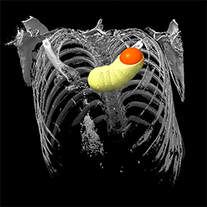 |
Right Oculus B button |
In this image of the left hand cone, the X button is bound to 'Hide Segmentations' as described in this table. The precise position of the buttons may be shown differently for Vive controllers. |
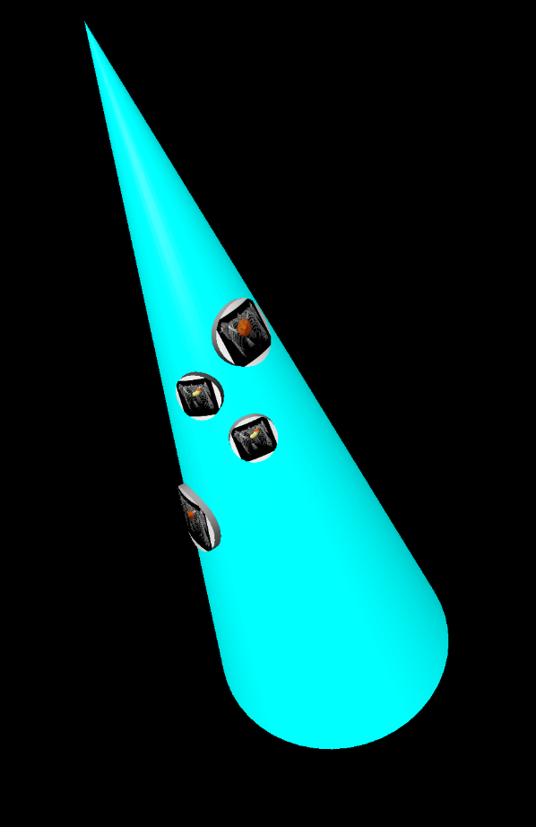 In this image of the right hand cone, the icons show that the grip button is bound to 'Move Cursor', the A button is bound to 'Add to Segmentation', the B button is bound to 'Remove from Segmentation', and the thumbstick button is bound to 'Resize Cursor', as described in this table. The precise position of the buttons may be shown differently for Vive controllers. |
|
Remove from Segmentation |
Right Oculus A button | ||
|
Resize Cursor 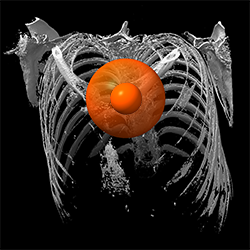 |
Right Oculus thumbstick | ||
|
Move Cursor 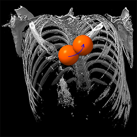 |
Right Oculus grip button | ||
|
Hide Segmentations
|
Left Oculus X button |
To switch to VR segmenting, use the dropdown on the tool. If configured to do so, the tool will start VR and configure hand modes for you automatically. If you need to set hand modes manually or turn off segmentation hand modes, you can use the ChimeraX toolbar in VR to do so.
Toolbar: Medical Image → Segmentation Controls → Set Hand Modes — (to turn on segmentation hand modes)
Toolbar: Medical Image → Segmentation Controls → Reset Hand Modes — (to turn off segmentation hand modes)
In VR, the right Oculus grip button is used to move the segmentation cursor without adding its path to or removing it from the segmentation. To add to the segmentation, hold down the A button and move the right hand controller. To remove from the segmentation, hold down the right B button and move the right hand controller. To make the segmentation cursor larger or smaller, push up or pull down on the right thumbstick.
The left Oculus controller's X button can be used to temporarily hide the segmentation when held. While the X button is held, the cursor can still be resized and the segmentation can still be expanded or erased; the X button is used for visibility; segmentations can begin to occlude fine details when they grow large.
These controls are summarized in the table on the right. Other buttons are unchanged from their defaults or user settings. The left trigger, left grip, or right trigger still move the reference data, and the Y button summons the ChimeraX UI, which can be used to change hand modes, adjust volume rendering, change segmentations, and add or remove them.
{kind=link}
{kind=link}
{kind=link}
{kind=link}
{kind=link}
{kind=link}
{kind=link}
{kind=link}
{kind=link}